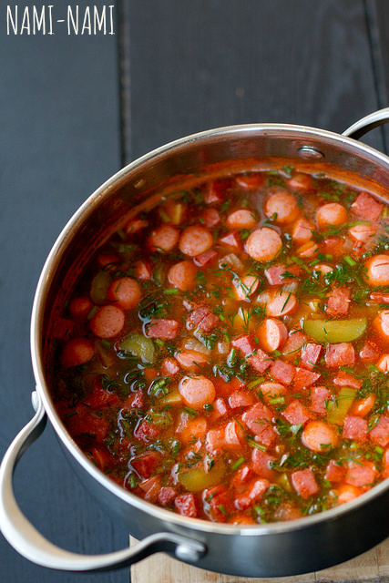

Seljankanäpp
|  |
Koostisosad |
Kogus |
| Õli |
1 sl |
| Sibul |
1 |
| Suitsuvorst |
240 g |
| Viinerid |
260 g |
| Marineeritud kurk |
2 |
| Teravat tomatikaste |
200 g |
| Puljong |
1l |
| Kartul |
4 |
| Sool ja pipar |
Maitse järgi |
| Hakitud
värske
till |
Maitse järgi |
| Hakitud
värske
petersell
| Maitse järgi |
|
Valmistamine
- Koori kartulid ja tükelda kõik tükeldamist vajavad komponendid
- Kuumuta poti põhjas õlis sibul klaasjaks
- Lisa tükeldatud suitsuvorst ja viinerid, siis mõne aja pärast kurk ja tomatikaste
- Kuumuta segades läbi, siis lisa kartulid ja kuum vesi või puljong
- Keeda, kuni kartul on pehme
- Lisa hakitud maitseroheline ja lase supil hetk maitsestuda
- vajadusel lisa ka soola-pipart
- Serveeri hapukoorega
Viide